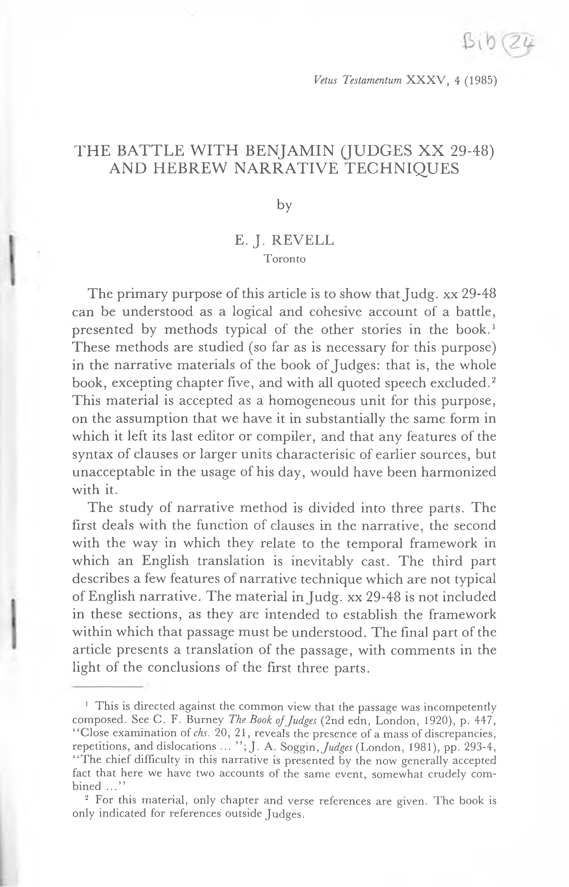

07a.24 The Battle with Benjamin Jud. XX 29-48 and Hebrew Narrative Techniques
Vetus Testamentum XXXV, 4 (1985)
THE BATTLE WITH BENJAMIN (JUDGES XX 29-48) AND HEBREW NARRATIVE TECHNIQUES
by
E. J. REVELL Toronto
The primary purpose of this article is to show that Judg. xx 2948־ can be understood as a logical and cohesive account of a battle, presented by methods typical of the other stories in the book.1 These methods are studied (so far as is necessary for this purpose) in the narrative materials of the book of Judges: that is, the whole book, excepting chapter five, and with all quoted speech excluded.2 This material is accepted as a homogeneous unit for this purpose, on the assumption that we have it in substantially the same form in which it left its last editor or compiler, and that any features of the syntax of clauses or larger units characterisic of earlier sources, but unacceptable in the usage of his day, would have been harmonized with it.
The study of narrative method is divided into three parts. The first deals with the function of clauses in the narrative, the second with the way in which they relate to the temporal framework in which an English translation is inevitably cast. The third part describes a few features of narrative technique which are not typical of English narrative. The material in Judg. xx 29-48 is not included in these sections, as they are intended to establish the framework within which that passage must be understood. The final part of the article presents a translation of the passage, with comments in the light of the conclusions of the first three parts.
1 This is directed against the common view that the passage was incompetently composed. See C. F. Burney The Book of Judges (2nd edn, London, 1920), p. 447, “Close examination of chs. 20, 21, reveals the presence of a mass of discrepancies, repetitions, and dislocations ... ”;J. A. Soggin, Judges (London, 1981), pp. 293-4, “The chief difficulty in this narrative is presented by the now generally accepted fact that here we have two accounts of the same event, somewhat crudely com bined ...”
2 For this material, only chapter and verse references are given. The book is
only indicated for references outside Judges.
418
E. J. REVELL
The Function of Clauses in the Narrative of Judges
The clauses in this corpus can be analysed, on a semantic basis,3
as representing four categories. (1) Narrative—carrying the main line of narrative, which is
represented as a series of events.
(2) Descriptive—providing information about an item or event
mentioned in the preceding clause.
(3) Contextualizing—providing the context in time, space, or
events in which a following narrative clause is located.
(4) Incidental—providing information which is neither a part of the main line of the narrative, nor closely related to what precedes or follows.
In a semantic classification of this sort there are few objective in dicators of the category to which a clause should be assigned, so that in a number of cases a good argument could be made for placing a clause in either of two categories. What is claimed here is that the existence of each category can be justified on the basis of clear ex amples, and that every clause in the corpus (excepting only those listed below as anomalous) can reasonably be assigned to one of these four categories.
- Narrative Clauses
The main line narrative is typically carried by verbal clauses with wayyiqtol forms.4 It seems that, with the exception of the cases of wyhy listed below, all wayyiqtol forms are contained in narrative clauses.5
3 This basis is not entirely subjective, having the support of a long history of translation and comment. The support of grammatical features might seem desirable, but in fact renders analysis such as that of F. I. Andersen in The Sentence in Biblical Hebrew (The Hague, 1974) unsuitable for this purpose, since the classification is based on a combination of semantic and structural phenomena. Apart from a few particles, grammatical markers of relationship above clause level appear (at the present stage of our knowledge) to be either ambiguous or non existent. It seems to me that a satisfactory attempt to describe the significance of grammatical features above clause level must be based on independent studies both of clause structure and of semantic function. Despite its many valuable insights, Andersen’s book is difficult to use because this basic information, which is not, in fact, available to the reader, is assumed.
4 For simplicity, verb forms are referred to as wayyiqtol (imperfect with waw con secutive), yiqtdl (other imperfect), weqdtal (perfect with waw consecutive) or qdtal (other perfect).
5 There are cases where this might appear not to be so. E.g. in iv 5, wyQlw might well be a continuation of a preceding incidental clause, why^ywsbt ..., with the
THE BATTLE WITH BENJAMIN (JUDGES XX 2948־)
419
Where wayyiqtdl cannot be used, narrative in past time is usually
carried by qdtal forms, as viii 20 wP sip hn^r ... ‘‘The boy did not draw his sword” vii 3 uPsrt ■*Ipym nPrw ... “Ten thousand remained” vii 25 wPs Qrb wz^b hby’w ... “They brought the heads of Oreb and Zeeb ...” The subject or modifier is placed before the verb in the last two cases to focus attention on it, to highlight a contrast (change of sub ject or object) with the preceding clause.6 Clauses of this form often occur at the end of a unit of text (as do these two) and may possibly be used with the intention of marking the end of such a unit.
Clauses with qdtal verbs introduced by ^z (viii 3, xiii 21) or Ql kn (xv 19, xviii 12) indicating a result of the event presented in the preceding clause are also to be regarded as narrative.
In the few cases in which repeated action in the past is presented, the verb of a narrative clause has the formyiqtdl or weqdtal, as ii 19 ysbw whshytw ... “They reverted and acted more corruptly than their fathers”. Also tlknh xi 40, w^mr xix 30. In the case ofykyn, xii 6, the meaning is uncertain. The action is possibly durative.
There seems no reason to suppose that the main narrative line is ever carried by verbless clauses. Probably wherever this could occur, some form of hyh was used, as vi 40 wyhy hrb ^l hgzh ... wQl kl h^rs hyh tl “It was dry on the fleece alone, but there was dew all over the ground”.
- Descriptive Clauses
Clauses of this type, which present further details about an item
mentioned in the preceding clause, are typically verbless, as iv 22 whytd brqtw “(There lay Sisera dead), the peg in his temple”.
following wtslh beginning the main narrative. This appears to be the general view, and is clearly that of Soggin (see n. 1) “She used to sit ... and the Israelites came up ... But one day she sent ...” However this view would appear to require wQlw to express repeated action (They used to come up). Consequently why^ ywsbt is prob ably contextualizing, and wy^lw narrative. “(When) she was living ... the Israelites came up (on one occasion) ... and (on this occasion) she sent for Baraq ...”
6 Andersen’s remark that clauses involving contrast of this sort (a chiastic sentence in his terms, p. 137) form a pair in parallel as regards narrative function is certainly justified, but emphasizes the point made above. Chiasmus is defined structurally. Such chiastic pairs may have a variety of functions. In this case the function of both clauses is narrative, even if the actions presented are parallel.
420
E. J. REVELL
Few such clauses contain even participles. One example is iv 2 whw^ y sb “(Sisera) who lived in Haroshet ha־Goyim”. A few verbal clauses describe items in this way, as xiii 2 wP yldh, in a series of descriptive clauses, “(A man named Manoah whose wife was barren), not having borne”. Or x 4 Ihm yqr’w ... “(Cities?) which they used to call Havvot Jair”.
Occasionally a verbal clause adds further detail on the action
represented by the verb of the preceding clause, as vi 19 hbsr sm ... whmrq sm ... “(He prepared a kid) putting the flesh in a basket and the broth in a bowl”. (Also ii 17, 17, xviii 17, 17.) Verbal clauses in the descriptive category are regularly asyndeton, unless joined by the conjunction to a preceding clause of the same category, as the examples in xiii 2 and vi 19 quoted above, and wP yhP in xx 16.7
Clauses introduced by ^sr (relative) and ky (explanatory) can be considered as forming sub-classes of the descriptive category. In both cases verbless clauses are the most common, followed by clauses with qdtal verbs. Clauses withyiqtdl verbs occur occasional ly. The single example of a clause introduced by btrm (xiv 18) is also classified as descriptive.
- Contextualizing Clauses
These clauses, which place a following narrative clause in a con text of time, place, or events, are typically verbal. The best-known group are those formed by wyhy followed by a temporal phrase, or (less commonly) a clause introduced by k^sr or ky* as iii 27 wyhy bbw^w ... “When he had arrived, (he blew ...)” iii 18 wyhy k^sr klh ... “When he had finished presenting the tribute, (he dismissed ...)”.
7 Verbless descriptive clauses, and clauses of other types, are rarely asyndeton. The asyndeton verbal descriptive clauses in Judges are ii 17 srw, P csw, vi 19 hbsr s'm; x 4 lhmyqPw\ xvii 6, xxi 25, ^ys... yQsh; xviii 17, b^w, Iqhw (also xx 31 hntqw, and presumably xx 43, ktrw, hrdyphw, mnwhh hdrykhw, see below), whmhnh hyh bth in viii 11 may be considered as a verbal descriptive clause with a conjunction (see Burney: “Whilst the host was careless”; Soggin: “When it thought that it was safe”). However, the use of hyh is unparalleled in a clause of this sort, and a similar needless repetition of an explicit subject is found only in iii 17 wQgln. On these grounds it may well be correct to classify the case in viii 11 as contextualizing. “The host had become secure (had not set sentries) so (there was no fight but) Zebah and Salmunnac fled ...”
8 Similarly with whyh where the context of past events was repeated ii 19, vi 3,
xii 5.
THE BATTLE WITH BENJAMIN (JUDGES XX 29421
(48־
The same contextualizing function is also performed by clauses in which a qdtal verb is preceded by the subject, or (much less fre quently) by a modifier, and by verbless clauses, usually containing a participle, and also usually with the subject placed first, as vi 34 wrwhyhwh Ibsh ... “The spirit of the Lord had clothed Gideon (and he blew the trumpet ...)” xxi 1 w^ys ysrd nsbQ... “The Israelites had sworn ... (and the people came ...)” xvi 9 wh^rb ysb Ih ... “The ambush was sitting (ready) for her ... (and she said to Samson ...)” or, in a pair of such clauses xviii 3 hmh Qm byt mykh whmh hkyrw ... ‘‘They were at Micah’s place, and they had recognized the Levite’s voice ... (and they turned aside ...)”.
This last example provides indisputable proof that the use of an independent pronoun as the subject of a verb, or the placing of the subject before the verb, is not always intended to focus attention on it. There is no visible purpose in the repetition of hmh except to pro vide a subject-^toZ structure. This can be regarded as definite proof that this clause (and so, by inference, other similar clauses) is not a narrative clause, and thus that subject-^/izZ is a typical structure for contextualizing clauses.
- Incidental Clauses
Most clauses originally assigned to this group could equally well be assigned to one or other of the two preceding groups. However a small number clearly does not fit either category. It seems best to classify in this way clauses introduced by hnh, at least when not following a form of r^h, as vi 28 whnh nts mzbh hbQl... “The altar of Baal had been torn down” This is followed by two further incidental clauses, also with qdtal verbs, but clauses of this type are more usually verbless, with a participle, as iv 22 whnh sysr* npl ... “Sisera was lying (dead)”. Examples which are not introduced by hnh are: verbal with qdtal xvi 31 whw3 spt ^tysr^l... “ He had judged Israel ... ”, verbless with participle, xiv 4 wbQt hhy^ plstym mslym ... “At that time the Philistines ruled Israel”.
422
E. J. REVELL
Verbless clauses with no participle are rare in this category. An example is viii 10 whnplym m^h w^srym ^lp ... 4‘The fallen were 120,000”.
Clauses which were not included in the above categories were omitted because their meaning was in doubt due to syntactical anomaly. These are Verbal wnQl iii 23; wayyiqtdl, or asyndeton qdtal is expected.
wQlw xvi 18; wayyiqtdl is expected.
Verbless Qbr viii 4; anomalous.9
wmply^ lQswt xiii 19; a nominal subject is expected.
xviii 7 wfn mklym dbr b^rs ywrs Qsr may be composed of two one part clauses, but the meaning is obscure.10
The Value of Verb-forms and of Verbless Clauses
The exact value of Semitic verb forms continues to be a subject of debate. For present purposes, however, the only question is how these forms are used in relation to the temporal framework of the English verbal system. The attempt to define this is made in terms of the actual relationship in time of the events in the narrative. This is a question quite separate from that of how Hebrew speakers perceived relationship in time.
The main body of the narrative is presented as a series of events represented in narrative clauses using wayyiqtdl verbs, with qdtal as a less common conditioned variant. The events described are in the past relative to the reader.
Where a descriptive clause relates to the event represented by the verb of the preceding clause, it necessarily refers to the time of that event. Consequently qdtal in this situation refers to the same stratum of past time as does wayyiqtdl (or qdtal) in the preceding nar rative clause, what might be called the present relative to the nar rative, the past relative to the reader. Such descriptive verbs are,
9 mtdpqym in xix 22 may be a similar situation, but is more easily accepted as at
tributive.
10 Easily intelligible one-part verbless clauses occur in xviii 12 hnh ^hry qryty^rym “(It is) west of Qiriat Yecarim” and xix 28 w^yn Qnh “(There was) no answer(er)”. (That ^yn is not in any way a [quasi] verbal particle may be seen by comparing a typical clause ^ynk smr with the basic form ^th smr and with other possible variations, as hnksmr, Qwdk smr. The verbal element is supplied only by English structure, not by Hebrew.)
THE BATTLE WITH BENJAMIN (JUDGES XX 2948־)
423
consequently, often conveniently translated by English participles, as vi 19 in (2) above, and in ii 17, 17, xviii 17, 17.
In all other cases, decriptive clauses relate not to an event, but to an item mentioned in the preceding narrative clause. In this case, a qdtal verb represents an event already past relative to the event described in the preceding clause. That is, a qdtal form in a descrip tive clause related to a preceding noun or pronoun refers to the past relative to the narrative, the pluperfect relative to the reader, as vii 19 wyb^ gdQn ... r^s h^smrt htykwnh hqm hqymw hsmrym ... “Gideon arrived ... at the beginning of the middle watch—they had just set the guards.” So also yldh xiii 2, htpqdw xx 15.
The same is true of all other clause types mentioned. A qdtal form represents an event which had already occurred at the time of the narrative. Thus in viii 35 ^sr Qsh ... After Gideon’s death, the treat ment of his family was not consistent with “all the good which he had done”, ix 5 ky nhb^... Jotham escaped death “because he had hidden”. So also in a contextualizing clause xxi 1 w^ysysPl nsbQ ... “The men of Israel had sworn”—presumably at the council before the battle, and in an incidental clause vi 28 whnh nts mzbh hbQl ... “The altar of Baal had been torn down”—in the night, before the citizens got up.
The relative time is quite clear in these, and in many other ex amples. The only cases in which the translation of the verb as pluperfect may seem unreasonable are those in which it represents a state or activity orginating in the past and continuing into the pres ent relative to the narrative.11 This is typical of hyh (iii 31, vii 1, viii 30, 30, ix 51, xi 1) andjprfc (xi 39, xiv 4) but also occurs withj&w (iii 5), and mlk (iv 2). The difficulty arises from English semantics, as is shown by the variant possibilities of translation, asysbw “lived” or “had settled”, mlk “reigned” or “had become king”. So also hyh “was” or “had become”, orydQ “knew” or “had realized”.
The states or events represented by (descriptive or other) verbless clauses are contemporary with those of the narrative context, (past
11 This assumes, of course, correct recognition of the nature of the action. For instance ky ^mrw in ix 3 does not present an action contemporaneous with or subse quent to that of the preceding narrative clause, but gives the motivation for that ac tion, and so represents a prior event. “(They decided to support Abimelech) for they had said/had decided on the basis of the fact that (He is our brother)”. So also xii 4, xvi 24.
424
E. J. REVELL
relative to the reader). If a participle is used, it typically represents a state or a durative activity, as iii 24 rddwt “the doors were locked” xix 22 mytybym “They were enjoying themselves” etc. In contrast to this, a yiqtdl form typically represents an activity repeated in past time, as ix 25jyc6r “all who used to come by” xiv 10ycsw “That is what young men used to do” x \ yqr^w “They used to call them”. However participle and imperfect are (at least in terms of English) interchangeable, as is shown by xx 16 ql· ... yht? “Each of these used to sling at a hair and not miss”.12
A durative past (at least as perceived in English), can, then, be expressed by qdtal (with HYH or statives), yiqtdl, or a participle. It is not unlikely that the conventions of Hebrew allowed such an overlap in function, just as simple or durative past forms can be interchanged in English, as “I sang as I walked along/was singing as I walked/sang as I was walking ... ”, without definable difference in meaning. The general pattern of usage is, however, quite clear. As was stated above, it is not claimed that the Hebrew speaker perceived the relationship of actions in terms of pluperfect etc., but that the distinct function of clauses other than narrative with qdtal verbs is most easily expressed in English by the use of this form. Compare vi 33 wkl mdyn ... n^spw ... wyQbrw wyhnw “All Midian had gathered ... They went and invaded ...” with vii 12 wmdyn ... nplym “Midian was occupying ...” (as a result of the invasion). Also iv 4 hy) spth ... “She was judging Israel” (at that time, participle, contextualizing) xii 7 wyspt ... “He judged (... died ... and was buried”, wayyiqtol, narrative). xvi 31 whw^ spt (Samson died ... They buried him ...) “He had judged Israel” {qdtal, incidental). The use of different forms is also notable in xix 22 hmh mytybyn ^t Ibm whnh \sy hQyr ... nsbw ... “They were enjoying themselves (partici
12 It is quite possible, however, that the participle has the same function here as
in sip hrb “Each of these was a ‘ slinger-at-a-hair’, and used not to miss”.
THE BATTLE WITH BENJAMIN (JUDGES XX 2948־)
425
pie, contextualizing) and—surprise—the men of the city had sur rounded {qdtal, incidental or contextualizing). Cf. also the pair of contextualizing clauses in xviii 3 (one verbless with no participle, one with qdtal) quoted above.
The function of these contextualizing clauses with qdtal could, of course, be expressed in English by an adverb, such as “after”, rather than by a pluperfect verb form. This raises the question of the difference between these contextualizing clauses, and those introduced by wyhy followed by ^hry. It appears that, as suggested above, a contextualizing clause with qdtal contextualizes a following wayyiqtdl in a specific stream of events, while wyhy fry merely places it within a time-frame. This is demonstrated not only by the rarity of the latter usage (in Judges only i 1 and xvi 4) but also by the fact that by far the most common introductory clause of this sort is wyhy fry kn, which relates solely to sequence in time. However there is no doubt that the two could be used to express the same idea. Com pare13 1 Kgs xx 1 wbn hdd ... qbs ... wyH wysr “Ben Hadad had collected his army ... (contextualizing). He went up and besieged ... (narrative)” with 2 Kgs vi 24 wyhy fry kn wyqbs bn hdd ... wyQl wysr ... “After this (contextualizing) Ben Hadad collected his army ... and went up and besieged ... (narrative)”. The difference be tween the two is that the use of the subject-^/«/ clause focusses the reader’s attention on the subject14 (Ben Hadad is a main participant in the opening verses of 1 Kgs xx) while the wyhy clause does not (Ben Hadad is not a main participant in 2 Kgs vi 24 ff.).
Features of Narrative Technique in Judges
It is difficult in any study of meaning to avoid a priori reasoning based on the assumption that our own norms are universal. The following section describes a few features of Hebrew narrative which tend, for that reason, to be overlooked or misunderstood.
The basic narrative, as was said, is presented as a series of events by means of wayyiqtdl clauses. Details are added by means of con textualizing and descriptive clauses. Despite this method, however,
13 These verses were pointed out to me by Stephen Dempster, whom I have to
thank for many other useful suggestions.
14 The fact that a subject (or other element) is placed before the verb to focus at tention on it—as where the subject changes—has, of course, long been recognized. For another clear example of a contextualizing clause in which the subject has this function, see the note on xx 32.2 in the analysis of the battle below.
426
E. J. REVELL
the events presented as a series are not always in chronological order. Just as it is typical in Hebrew narrative to present a person or object first by a general statement, then by a specific one (as in iv 11 mqyn mbny hbb htn msh “from Cain—specifically from the descen dants of Hobab”) so an event is quite often presented first in sum mary, and then in greater detail. Thus the fact represented by wywsy^m “and he saved them” in iii 9 is treated in greater detail in iii 10. Similarly in viii 35 it is stated that the men of Israel did not act rightly towards Gideon’s family, and the details of this are given in ix 1-6.
Where two related chains of events must be described, it is com mon to complete the description of one before the other is treated. Thus in iv 16, the fate of the army of Hazor as a whole is described (“Baraq” here is clearly synecdoche for Baraq’s army), while the fate of their leader is detailed separately in iv 17-21. Similarly in 1 Kgs xviii, the activities of the priests of Baal are described in full in verses 26-29. Verse 30 begins the description of Elijah’s activities, but it is not until verse 36 that this reaches the point in time at which the narrative of the Baal priests ended in verse 29.
Where the narrative of the first chain of events must be resumed after the second has been treated, the reader is often returned to the point in the narrative at which the treatment of the second chain began, by means of the repetition of a statement made at that point, as has been pointed out by Talmon.15 Typical examples are found in iii 19-20, where Ehud’s opening statement to the king (describing his message first as dbr str then as dbr ^Ihym) brackets a description of how the king came to be alone, and in vii 18־, where the statement of the location of the Midianite army brackets the account of the reduction of Gideon’s troops to 300. However the presentation of simultaneous or synchronous events to which Talmon directs atten tion is only one aspect of the use of repetition. It may be used to return the reader to the main line of thought after any digression. In Jotham’s speech in ix 19, w^m b^mt wbtmym Qsytm “If you have acted with honesty and integrity”, repeating ix 16, gives an exam ple of return from a digression in an argument which might occur in any language. In xi 32, wyQbrypth bny ^mwn “Jephthah marched against the Ammonites” repeats xi 29 wmmsph glQd Qbr bny Qmwn,
15 “The Presentation of Synchroneity and Simultaneity in the Biblical Nar
rative”, Scripta Hierosolymitana 27 (1978), pp. 9-26.
THE BATTLE WITH BENJAMIN (JUDGES XX 2948־)
427
returning the narrative to the main chain of events after a digres sion describing Jephthah’s vow. The point in time at which the vow was made is irrelevant. In xiv 17 wtbk Hyw sbQt hymym “She wept at him for the seven days” repeats xiv 16 wtbk ^st smswn Hyw after a digression which specifies those actions of Delilah summarized as wtbk, and Samson’s reactions to them. A verb of speaking may be repeated to clarify the presentation of quoted speech. In xi 37, wTmr ^l ^byh “She said to her father” (repeating xi 36 wTmr fyw), separates the statement, by his daughter, that Jephthah must keep his vow, from her request (presumably made in the same speech) for a two month delay. In a similar way, in xiii 5 hnk hrh wyldt bn “You are pregnant and will bear a son (repeating xiii 3 whryt wyldt bn) separates instructions on the conduct of the parents from instructions on the treatment of the child.
There are over twenty examples in Judges of repetition of the types described (excluding cases such as the repetition of an explicit subject where a pronoun could be used, or repetition which is lexically necessary). It is clear, then, that repetition is an important technique, used in a variety of ways. It is also important to realize that such repetition is usually not exact, but is artistically varied, as is seen in the examples above, and in those given by Talmon. This variation quite often consists in the addition of new information, in the second clause, as the purpose of Jephtha’s advance in xi 32 (Ihlhm), the addition of “seven days” as the period of Delilah’s weeping in xiv 17, and, among Talmon’s examples, the location of the Philistine army in 1 Sam. xxix 1 (cf. xxviii 1).
The Narrative of the Battle
In the following translation, the clauses are marked, as (1) nar rative, (2) descriptive, (3) contextualizing, or (4) incidental. The preceding description of these clause-types is considered to justify the translation given, so that alternative views are generally not considered. The conjunction waw joining the clauses is ignored, since any representation conforming to English usage (as “but, then, so” rather than perpetual “and”) is highly subjective.16 Units of text marked out by these clause types, or by the use of
16 This has the advantage of illustrating Andersen’s remark that the different relations between clauses, marked in some languages by different conjunctions, are marked in Hebrew by different clause patterns (p. 61).
428
E. J. REVELL
techniques such as repetition, are separated by a blank line. A few cases where the text is obscure, and better understanding might affect the syntactical analysis, are marked (?). Problems of geography are ignored. Clauses are identified by the number of the verse (in Judg. xx) and a number representing the position of the clause in the verse.
(1)
(1) (1)
(1) (2)
29.1 Israel set liers־in־wait against Gibea round about.
30.1 Israel advanced against Benjamin on the third day. 30.2 They drew up before Gibea as formerly.
31.1 Benjamin made a sortie against the people. 31.2 Being lured out from the city. 31.3 They began striking down some of the people as formerly, in the roadways (...) in the farmland, some thirty men of Israel.
(1) 32.1 Benjamin thought “They are routed before us as at first”. (1)
32.2 Israel had decided “We will retreat so as to lure them out
from the city into the roadways”.
33.1 Every man of Israel had risen from his place. 33.2 They drew up at Baal Tamar.
33.3 The Israelite ambush burst forth from its place at Maare
Geba.
34.1 They arrived opposite Gibea, 10,000 chosen men from all
Israel.
34.2 The battle was fierce. 34.3 They (Benjamin) had not realized that disaster was immi
nent.
35.1 God routed Benjamin before Israel. 35.2 Israel slaughtered of Benjamin that day 25,100 men. 35.3 All of these were sword-bearers.
36.1 Benjamin saw that they (Israel) had been routed. 36.2 The men of Israel gave place before Benjamin. 36.3 Because they trusted in the ambush they had set against
Gibea.
37.1 The ambush had hurried. 37.2 They rushed on Gibea. 37.3 The ambush marched on.
(3) (3) (1)
(3)
(1) (4)
(4)
(1) (1) (2)
(1) (1)
(2)
(3) (1) (1)
THE BATTLE WITH BENJAMIN (JUDGES XX 29429 (48־
37.4 They put the whole city to the sword.
38.1 An agreement had been made by Israel with the ambush that they should send up a great smoke signal from the ci
ty·
39.1 Israel turned about in battle.
39.2 Benjamin had begun to strike down the men of Israel,
some thirty.
39.3 For they had decided “They are clearly routed before us,
as in the first battle’ ’.
40.1 The signal had begun to rise from the city, a pillar ol
smoke.
40.2 Benjamin turned around. 40.3 The sacrifice-like smoke of the city had risen to heaven.
41.1 Israel had turned about. 41.2 Benjamin was horrified. 41.3 For they saw that disaster had come upon them. 42.1 They turned about before Israel towards the wilderness. 42.2 The fighting was inescapable. 42.3 Those from the city (?) were destroying them between
them(selves and the main body of Israel) (?).
43.1 Surrounding Benjamin (?) 43.2 Pursuing them (?) 43.3 Overrunning them (?) as far as opposite Gibea. 44.1 There fell of Benjamin 18,000 men. 44.2 All of these were mighty men.
(1)
(3) (1)
(3)
(2)
(3) (1) (4)
(3) (1) (2) (1) (4)
(4) (2) (2) (2) (1) (2)
45.1 They turned about and retreated to the wilderness, to
Selac ha-Rimmon.
45.2 They (Israel) gleaned of them in the roadways 5,000 men. 45.3 They pursued them as far as Gidcom. 45.4 They struck down of them 2,000 men. 46.1 The total losses of Benjamin were 25,000 sword-bearers on
that day.
46.2 All of these were mighty men.
47.1 They turned about and retreated to the wilderness, to
Selac ha-Rimmon, 600 men.
47.2 They stayed in Selac ha-Rimmon for four months.
(1) (1) (1) (1)
(1) (2)
(1) (1)
430
E. J. REVELL
48.1 The men of Israel had turned back to (the rest of) Ben
jamin.
(3)
48.2 They struck them down, city (?) and beast, all that they
found.
(1)
48.3 They also set on fire all the cities they came to.
(1)
The account opens with a series of narrative clauses forming two units which describe the initial actions of Israel (29.130.2־). The next unit, a series of narrative clauses (31.1-32.1) which includes one descriptive clause (31.2, verbal, asyndetic) similarly describes the initial moves by Benjamin. In the next clause, 32.2, the subject is placed first, highlighting the change of participant. The clause does not, however, continue the narrative, but refers to a decision taken earlier by Israel, a consequence of which is already described in 29.1. Thus 32.2 acts as a clause contextualizing the events in 33.12־. The next clause, 33.1, can also be considered as contex tualizing the next narrative clause, 33.2. These describe the tactical withdrawal of the main body of Israel. 33.3 (contextualizing) and 34.1 (narrative) describe the movement of the ambush from its in itial concealment into position to attack the now almost undefended Gibea.17 Two incidental clauses, 34.23־, supply comment. The two narrative clauses and a descriptive clause in verse 35 then give a summary statement of Israel’s victory, following which the actions of the three separate groups of participants are treated in detail.18 In 36.1, the story reverts, by means of repetition, to the begin ning of the battle. 32.1 is repeated, with some change, as is com mon in these cases. The lack of clear indication that Israel is the subject of ngpW) exacerbated by the use of the same root in 35.1, is certainly inept.19 It is, however, only the most striking of several cases in this passage in which the reader’s knowledge of events is
17 mgyh probably means little more than “(Set out to) attack”; cf. LXX, Targum. mngd, “opposite”, implies “at some distance (but within sight)”; see 2 Kgs ii 7, 15, iii 22, iv 25.
18 For a summary preceding a more detailed statement, see the notes on nar rative technique above. That hm in 34.3 refers to Benjamin is clear from the con text, and was indicated specifically by Jerome. On the lack of antecedent, see below.
19 The contrasting use of similar forms is not uncommon elsewhere, as in vii 5-7 Iqq (qal) “lap” (like a dog), Iqq “lap” (from the hands); vii 9 w^myr^ ^th Irdt rd ... “If you are afraid to go down (to attack), go down (to spy) ...” These may be word-plays of the type more familiar at a higher literary level. If so, the word “in ept” merely reflects this writer’s obtuseness.
THE BATTLE WITH BENJAMIN (JUDGES XX 2948־)
431
relied on to provide the correct antecedent for a pronoun, and this is common enough elsewhere.20
In verse 37, the actions of the ambush are described. 37.1 (Con textualizing) alludes to 33.3. The following three narrative clauses describe the successful attack on the city.21 The next unit, 38.139.1־, deals with Israel. The first clause (contextualizing) reveals a further part of their plan.22 The narrative clause (39.1) presents the crucial event: Israel reverses its tactical withdrawal.
From here on the narrative concentrates on Benjamin. A contex tualizing clause, with following explanation (39.23־) returns the reader again to the beginning of the battle by means of repetition (cf. 31.3 , 32.1).23 A further contextualizing clause, (40.1, cf. 38.1) leads to the narrative and incidental clause (40.2-3) in which Ben
20 Cf. hm 34.3, btwkw 42.3, the subject of wy^Uhw 45.2. Confusing use of pro nouns is common enough elsewhere, e.g. wytq^w in vii 22 (cf. the preceding verbs), wyswrw xviii 15, wybnw xviii 28 (cf. Ihm). Most commentators take Benjamin as the subject of ngpw, in which case the clause is something of an embarrassment even where two sources are separated. It is usually tacked on to verse 35 as its sequel, but “the words make a ludicrous impression” in this position, as remarked by G. F. Moore A Critical and Exegetical Commentary on Judges (Edinburgh, 1895), 438. He nevertheless takes this view, emphasizing the tacit assumption of such critics that the compiler was incompetent. Such theories are seriously deficient in their failure to suggest a plausible historical context and motivation for an editorial pro cess which, as they see it, took two short but clear accounts and mixed them to form a longer but almost unintelligible one. As far as I have noticed, the fact that the subject of ngpw is “Israel” is recognized only in the New American Bible (New York, 1970).
21 The clause 37.3 appears completely redundant, but this is possibly because the implications of pst and msk are not accurately known. E.g. if msk indicates a particular military formation (as suggested by Burney in iv 6) this clause is not redundant.
22 As the text stands, hrb in xx 38 is to be taken as an irregular form of infinitive absolute (cf. the Targum). The introduction of a detail of the sort presented in this clause where it becomes significant in the story rather than at the chronological point at which it originated is common. Cf. Delilah’s ambush in xvi 9, the Israelite vow in xxi 1.
23 Burney emends the explanatory clause to a statement “And they said”. However the use of ky ^mrw here is the same as that described in note 10. It gives the motivation of the acton of the preceding clause. Benjamin had begun to strike down their enemies (had committed their forces to a serious attack) because they had concluded that they were routed (so that caution was no longer necessary). This explanatory clause does repeat 32.1, which is given in the wayyiqtol (narrative) form expected by Burney, but that follows the statement that Benjamin was drawn out of the city (31.2). A narrative (rather than an explanatory) clause was probably used there to allow the contrast with the following clause: “Benjamin concluded ..., but Israel had planned ...” For a similar variation see whryt and hnk hrh in xiii 4, 5, 7.
432
E. J. REVELL
jamin discovers that their base is captured. This is now emphasi zed. A contextualizing clause (41.1) repeats the crucial reversal by Israel (39.1), and a narrative and an explanatory clause (41.23־) describe its effect on Benjamin. The narrative clause in 42.1, men tioning Benjamin’s retreat, presents Benjamin’s reaction. The language of the next five clauses (apparently two incidental followed by three descriptive) is at times obscure, but there seems no doubt that they describe how Benjamin was treated as a result of Israel’s reversal. In verse 44, a narrative and a descriptive clause describe the losses of Benjamin during this first phase of Israel’s final attack.
In 45.1 the retreat is again mentioned (repeating 42.1, with the added detail, often found in such cases, that Selac ha-Rimmon is its objective). Three narrative clauses (45.2-4) detail the Benjaminite losses during this next phase of Israel’s final attack, firstly in the (presumably enclosed) “roadways”, and secondly during the final phase of the pursuit, presumably through the open “wilderness”. In verse 46, a narrative and a descriptive clause, the total losses are given.
In 47.1, the narrative reverts to the retreat with the repetition of 45.1, giving, in a characteristic addition of detail, the number who finally reached safety. A second narrative clause, 47.2, gives a final item of information on this remnant of Benjamin. In verse 48, the narrative turns back to Israel, possibly giving the reason for Ben jamin’s long stay in the refuge. This final unit, a contextual, and two narrative clauses, describing the mopping up operations, closes the account of the battle. It also provides the background for the main concern of the next section of the narrative, the fact that Ben jamin is left destitute of women.
There is, then, no serious difficulty in accepting this section as a cohesive account of the battle, logically composed according to the conventions of Hebrew narrative standard in Judges and elsewhere. The complexity of the account is undoubtedly due, in part, to the need to present the activities of three different groups participating in the battle, a problem not often presented to the nar rator, and difficult to solve within the linear convention of Hebrew narrative. The account in its present form does show some inep titude (see above on 36.1), and this may reflect the fact that it was compiled from more than one source, as is commonly argued. It is, however, quite wrong to see what Burney called “repetitions and
THE BATTLE WITH BENJAMIN (JUDGES XX 29433
(48־
dislocations” (see n. 1) as evidence of this. These are as much a part of the technique used to present the narrative as is the use of wayyiqtöl forms. Identification of the phenomena which actually do reflect different sources is impossible unless the features of this narrative technique can be recognized for what they are. In other words, a good knowledge of the technique of Hebrew narrative as displayed in the received text is a necessary part of the equipment of a literary critic.24 The demonstration of this is the secondary purpose of this article.
24 Features of narrative technique have been noted before, as in the commentary of C. F. Keil, Biblischer Commentar über die prophetischen Geschichtsbücher 1, Josua, Richter und Ruth (Leipzig, 1863), p. 348, n. 1, E. tr. Biblical Commentary on the Old Testament 4, Joshua, Judges, Ruth (Edinburgh, 1975), p. 455, n. 1, in reaction to the original source analysis of this passage by E. Bertheau. However the importance of such features is still not fully realized.
Vetus Testamentum XXXV, 4 (1985)
THE MONOTHEISTIC ARGUMENTATION IN DEUTERONOMY IV 32-40: CONTENTS, COMPOSITION AND TEXT
by
ALEXANDER ROFE
Jerusalem
The key to the understanding of the pericope Deut. iv 3240־ lies, in my opinion, in the critical reading of Deut. v 1927־. We turn first, therefore, to the latter passage in order to examine its literary sequence.1
The main story in Deut. v 19-27 relates that when the Israelites heard the Ten Commandments they were stricken with awe. They turned to Moses and said: 4'Let us not die being consumed by this great fire; if we hear the voice of the Lord our God any longer we shall die” (v 22).2 The awesome sight of the fire surrounding the Lord and the hearing of his voice speaking to them were unbearable. The people, therefore, asked Moses to become an in termediary: "You go closer and hear all that the Lord our God says, and then you tell us everything that the Lord our God tells you, and we shall hear and do it” (v 24). The Lord acceded to their plea, commended their good intention (v 2526־) and commanded Moses to send them back to their tents (v 27). The following verses relate how the Lord appointed Moses to receive "the precept, the laws and the judgements which you shall impart to them” (v 28). Moses complied, and now, in his speech to the people, he imparts to them "the precept, the laws and the judgements” received at Horeb (vi 1), beginning with the solemn declaration: "Hear, O Israel, the Lord is our God, the Lord is one” (vi 4).
However, side by side with the description of the people’s awe and withdrawal, instrumental in the development of the story,
1 I have made a first attempt in this direction in my article “Deuteronomy 5:28-6:1: Composition and Text in the Light of Deuteronomic Style and Three Tefillin from Qumran (4Q 128, 129, 137)”, Henoch (in the press).
2 Translations of biblical passages have been adapted from the NJPS.
